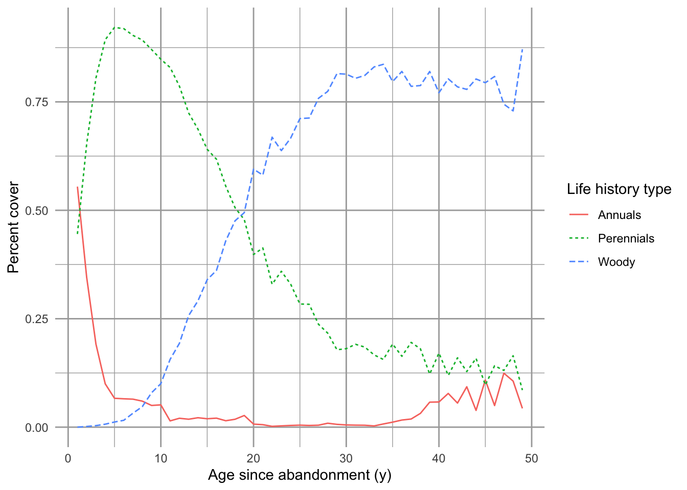
9 Coexistence via competition, dispersal, and storage
In this chapter, we will explore and compare concepts in which transient dynamics at one spatial or temporal scale result in long-term coexistence at another. All these models assume that species coexist because there exists at least a brief window in time during which each species has an advantage.
We begin with a simple model of the competition–colonization tradeoff, explore habitat destruction and the extinction debt, and then examine a model that adds an important subtlety: finite rates of competitive exclusion. We finish up with an introduction to a very important phenomenon, the storage effect.
9.1 Competition–colonization Tradeoff
Models of coexistence via this tradeoff have been around for over 70 years (Skellam 1951; Levins and Culver 1971; Horn and MacArthur 1972; Armstrong 1976; Hastings 1980; Shmida and Ellner 1984; Levin et al. 1984). In this tradeoff, species coexist because all individuals die, and therefore all species have to have some ability to colonize new space. This implies that species may be good at colonizing open sites, or they may be good at displacing other species from an occupied site. These two extremes setup the basic tradeoff, wherein species coexist none of them have too good a combination of both traits.
Here we provide the two-species model of this phenomenon (Hastings 1980). We explored the basis of this model back in our chapter on metapopulation dynamics, in which the state variable was a proportion of available sites. Similarly, here we focus on the case where the state variable is the proportion of available sites, rather than \(N\). We represent the proportion of sites, \(p\), occupied by each of two species, \[ \frac{d p_1}{d t} = c_1p_1\left(1-p_1\right) - m_1p_1 \tag{9.1}\]
\[ \frac{d p_2}{d t} = c_2p_2\left(1-p_1-p_2\right) - m_2p_2 - c_1p_1p_2 \tag{9.2}\] where \(p_i\) is the proportion of available sites occupied by species \(i\), and \(c_i\) and \(m_i\) are the per capita colonizing and mortality rates of species \(i\). Parameter \(m\) is some combination of inherent senescence plus a background disturbance rate; we will refer to these simply as mortality.
As represented in eq. Equation 9.1, species 1 is the superior competitor. The rate of increase in \(p_1\) is a function of the per site colonizing ability, \(c_i\), times the proportion of sites occupied by species 1, \(p_1\), times the space not already occupied by that species, \(1-p_1\). One could estimate \(c_1\) by measuring the rate at which an open site is colonized, assuming one would also be able to measure \(p_1\). The rate of decrease is merely a density-independent per capita rate, \(m_1\), times the proportion of sites occupied by species 1, \(p_1\).
Eq. Equation 9.2 represents the inferior competitor. The first term includes only space that is unoccupied by either species 1 or 2 (\(1-p_1-p_2\)). Note that species 1 does not have this handicap; rather, species 1 can colonize a site occupied by species 2. The second species also has an additional loss term, \(c_1p_1p_2\) (eq. Equation 9.2). This term is the rate at which species 1, the superior competitor, colonizes sites occupied by species 2, and immediately displaces it. Note that species 1 is not influenced at all by species 2.
Here is the R function of ODEs for eqs. Equation 9.1, Equation 9.2, which is already implemented in primer.
compcol <- function(t, y, params) {
p1 <- y[1]; p2 <- y[2]
with( as.list(params), {
dp1.dt <- c1*p1*(1-p1) - m1*p1
dp2.dt <- c2*p2*(1-p1-p2) -m2*p2 - c1*p1*p2
return( list( c(dp1.dt, dp2.dt) ) )
})
}At equilibrium, species 1 has the same equilibrium as in the Levins single species metapopulation model. \[ \begin{aligned} p_1^*&=1-\frac{m_1}{c_1} \end{aligned} \tag{9.3}\] The abundance of species 1 increases with its colonizing ability, and decreases with its mortality rate.
At equilibrium, species 2 has an equilibrium that is influenced by species 1. Let’s solve for \(p_2^*\) now. \[ \begin{aligned} 0 &= c_2p_2\left(1-p_1-p_2\right) - m_2p_2 - c_1p_1p_2\notag\\ 0 &= p_2\left(c_2-c_2p_1 - c_2p_2 - m_2 - c_1p_1\right)\notag\\ 0 &= c_2 - c_2p_1 - c_2p_2 - m_2 - c_1p_1\notag\\ c_2p_2 &= c_2 - c_2p_1 - m_2 - c_1p_1\notag\\ p_2^* &= 1 - p_1^* - \frac{m_2}{c_2} - \frac{c_1}{c_2}p_1^*\\ \end{aligned} \tag{9.4}\] In addition to the trivial equilibrium (\(p_2^*=0\)), we see that the nontrivial equilibrium depends on the equilibrium of species 1. This equilibrium makes intuitive sense, in that species 2 cannot take over sites already occupied by species 1. In addition, and like species 1, it is limited by its own mortality and colonization rates (\(-m_2/c_2\)). It is also reduced by a bit due to those occasions when both species colonize the same site (\((c_1/c_2)p_1\)), but only species 1 wins.
Substituting \(p_1^*\) into that equilibrium, we have the following. \[ p_2^* = 1 - \left(1-\frac{m_1}{c_1}\right) - \frac{m_2}{c_2} - \frac{c_1}{c_2} \left(1 - \frac{m_1}{c_1} \right) \tag{9.5}\]
\[ p_2^* = \frac{m_1}{c_1} - \frac{m_2 - m_1 + c_1}{c_2} \tag{9.6}\]
What parallels do you see between the equilibria for the two species?
The form of the equilibria is quite similar, with two additions for species 2. The numerator of the correction term includes its own mortality, just like species 1, but its mortality is adjusted downward (reduced) by the mortality of species 1. Thus the greater the mortality rate of species 1, greater is the opportunity for species 2. This term is also adjusted upward by the colonizing ability of species 1; the greater species 1’s colonizing ability, the more frequently it lands on and excludes (immediately) species 2, causing a drop in species 2’s equilibrium abundance.
In order to focus on the competition–colonization tradeoff, it is common to assume mortality is the same for both species. Tradeoffs with regard to martality are also important, especially if high mortality is correlated with high colonization rate, and negatively correlated with competitive ability.
If we assume \(m_1=m_2\), perhaps to focus entirely on the competition–colonization tradeoff, we can simplify eq. Equation 9.6 further to examine when species 2 can invade (i.e. \(p_2^* >0\)). Eq. Equation 9.6 can simplify to either of these versions: \[ \begin{aligned} \frac{m}{c_1} &> \frac{c_1}{c_2} \\ \frac{c_2}{c_1} &> \frac{c_1}{m} \end{aligned} \tag{9.7}\] How can we interpret these? Species 2 can invade if the space not occupied by species 1 (\(m/c_1\)) is greater than species 1’s relative colonization rate (\(c_1/c_2\)). Another way to think about this is that species 2 can persist if its relative colonization rate is greater than species 1’s colonization rate relative to mortality.
The equilibria also indicates something intuitive for most field ecologists: that increasing disturbance rates, and hence mortality of both species, will enhance the abundance of the species which can recolonize those disturbances. More disturbed areas should have more of species 2.
Thus, this model predicts that these species can coexist, even though one is a superior competitor. Further, it predicts that species 2 will become relatively more abundant as mortality increases.
9.1.0.1 What is a “site”?
Just exactly what corresponds to a site is not always defined in an operational manner. Nonetheless site-based models such as these have often been used in a qualitative manner to describe the dynamics plant communities (Hurtt and Pacala 1995; Tilman and Downing 1994; Pacala 1997; Pacala and Rees 1998). Such models could describe systems such as a single field or patch of grassland, where a site is a very small spot of ground, sufficient for the establishment of an individual (Tilman 1994). Alternatively, a single site could be an entire field within a large region of mixed successional stages. For the time being, let us continue to focus on a single field (0.1 - 1 ha) as a collection of small plots (e.g., 1-5 cm\(^2\)), each of which might hold a single potentially reproductive individuals.
9.1.0.2 Estimating colonization and mortality rates
Here we estimate parameters for the two-species competition-colonization model, where the two “species” are annual and perennial plants. The proportion of sites they occupy will be \(p_1\) (perennials), and \(p_2\) (annuals).
We may want to estimate these quantities for several reasons:
- practice working with data and models,
- become more comfortable and familiar with these models in particular,
- become more accustomed to estimating ecologically relevant characteristics of populations or species other than their average abundances.
All of these reasons will make us better prepared to (i) understand more mechanistic descriptions of ecological phenomena, (ii) test interesting hypotheses, and (iii) solve environmental problems.
Consider secondary succession following a major disturbance in old-field or grassland (as in Fig. Figure 9.1). In the first year, we find that annuals (e.g., ragweed) show up in 55% of available space, and perennials (e.g. goldenrod, maple) show up in the 45% of the space, and in the second year, annuals make up only 35% while perennials now make up 65%. We might also know that at equilibrium, perennials take up about 95% of the space.
We can make a back of the envelope calculation to estimate parameters, if we assume or hypothesis that our competition-colonization model is correct.
Recall that the equilibrium for the dominant competitor is \(p^*_1 = 1-m/c_1\), and that \(p^*_1 = 0.95\) in our data. That implies that for this “species” perennials \(m = 0.05 c_1\), that is, that the observed mortality rate is 5% of the colonization rate.
Note from the data above that it achieves approximately equilibrium abundance quite quickly. If we make simply guess that \(c_1=0.9\), and that there is only 1% of free space available (\(1-p^*_1-p^*_2 = 0.01\)), we can estimate \(c_2\).
Thus,
c1 <- .9
m <- 0.05 * c1
p2.eq <- 1 - 0.95 - 0.01Referring to the equation for \(p^*_2\) above, we can rearrange to get \[c_2 = \frac{m+c_1}{1 - p_1^* - p_2^*} p_1^*\] and we calculate,
c2 <- (m+c1) / (1-0.95-0.04) * 0.95
c2[1] 89.775Based on our back of the envelope calculations and guess-timates, the annuals are about 90 times as good as the perennials. Seems like a testable proposition.
Note that we are assuming that both perennials and annuals have the same value of \(m\), mortality, and this is ridiculous. By definition, annuals have complete martality each year. I will use poetic license and define survival and mortality in a highly operational manner. For this purpose, survival is the rate at which at which a species persists or replaces itself at a site anbd mortality is \(m = 1-s\). Therefore, we are assume that in the absence of competition both types of species can persist at a site very well.
Now let’s project the population through time by solving the differential equations for twenty years (Fig. Figure 9.2).
t <- 0:20
parameters <- c(m1=m, m2=m, c1=c1, c2=c2)
p.initial <- c(Perennials=0.45, Annuals=0.55)
out <- ode(y = p.initial, times=t, func=compcol, parms=parameters)
# plot(out) #not shown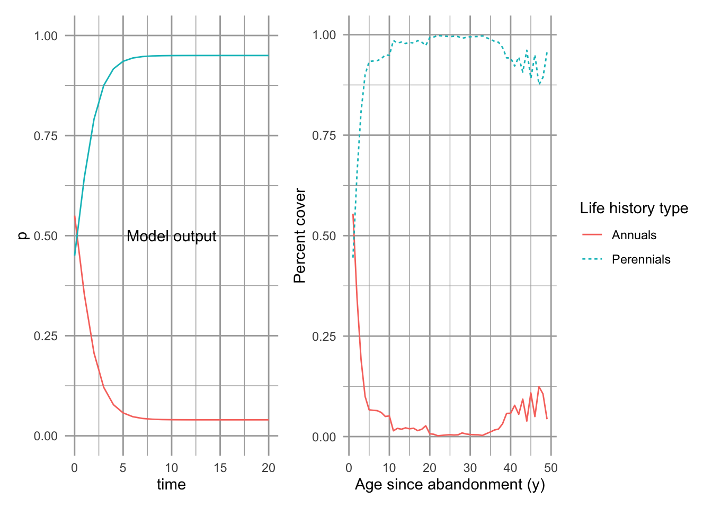
Our model results seem qualitatively consistent with what we know about successional trajectories. With a lot of open sites, perhaps early in primary or secondary succession, good colonizers get in quickly and fill the site. They are replaced subsequently by the competitively superior species. This is a classic view of succession, with pioneer, seral, and climax species. Note that our example focused on small plots within a single field, but we could apply it to a much larger scale.
We could have used particular approaches to try to get a more precise match between model predictions and data. However, if we really wanted to use this model for a particular purpose, we would needto thinking much more deeply about
- what our goals were, and/or
- how the model represents or misrepresents the traits of the species.
Regardless, I hope you now have a little bit better sense of what this important model does. The competition-colonization tradeoff is generally considered an important natural history tradeoff among many groups of organisms.
9.1.1 Habitat destruction
Nee and May (1992) and Tilman and Downing (1994) showed that, given these tradeoffs, an interesting phenomenon arose. If species coexist via this competition–colonization tradeoff, destruction of habitat increases the abundance of the inferior competitor. How does it do this? First let’s derive this analytically, and then consider it from an intuitive point of view.
We define habitat destruction, \(D\), as the loss or reduction of space available for colonization. In the absence of habitat destruction, this space varies in the interval \((0,1)\). With habitat destruction, \(D\), the maximum amount of space is no longer \(1\) but is reduced to \(1-D\), or the interval \((0,1-D)\). We can alter the above equations to include habitat destruction, \(D\). \[\begin{align*} \frac{d p_1}{d t} &= c_1p_1\left(1-D-p_1\right) - m_1p_1\\ \frac{d p_2}{d t} &= c_2p_2\left(1-D-p_1 - p_2\right) - m_2p_2 - c_1p_1p_2 \end{align*}\]
We can then solve for the equilibria. \[ \begin{aligned} p_1^*&= 1 - D - \frac{m_1}{c_1}\\ p_2^* &= \frac{m_1}{c_1} - \frac{m_2}{c_2} - \frac{c_1}{c_2}\left(1 - D - \frac{m_1}{c_1}\right)\\ &= \frac{m_1}{c_1} - \frac{m_2}{c_2} - \frac{c_1}{c_2} + \frac{c_1}{c_2}D + \frac{m_1}{c_2} \end{aligned} \tag{9.8}\]
If we compare these equilibria to those without equilibria (\(D=0\)), We see a couple things. most importantly, habitat destruction has a simple and direct negative effect on the abundance of species 1. For species 2, we see the first two terms are unaltered by habitat destruction. The third and last term represents the proportion of colonization events won by the superior competitor, species 1, and thus depends on the abundance of species 1. Because habitat destruction has a direct negative effect on species 1, this term shows that habitat destruction can increase the abundance of inferior competitors by negatively affecting the superior competitor. The term containing \(D\) is actually a positive term quantifying the benefit to the inferior competitor.
We must also discuss what this does not mean. Typically, an ecologist might imagine that disturbed habitat favors the better colonizer, by,
- increasing the mortality rate,
- opening more sites for good colonizers, and
- perhaps creating environmental conditions that favor rapid growth.
This differs from habitat destruction, which reduces the size of the available habitat in question. Imagine a parking lot is replacing a grassland, or suburban sprawl is replacing forest; the habitat is shrinking. This has a negative impact on the better competitor.
9.1.1.1 Multispecies competition–colonization tradeoff and habitat destruction
The work of David Tilman and his colleagues in grassland plant communities at the Cedar Creek Natural History Area (a NSF-LTER site) initially tested predictions from the \(R^*\) model, and its two-resource version, the resource ratio model (Tilman 1982, 1988; Wedin and Tilman 1993; Wilson and Tilman 1995). They found that soil nitrogen was really the only resource for which the dominant plant species (prairie grasses) competed strongly. If this is true, then the single resource \(R^*\) model of competition predicted that the best competitor would eliminate the other species, resulting in monocultures of the best competitor. The best competitors were little bluestem and big bluestem (Schizachyrium scoparium and Andropogon gerardii), widespread dominants of mixed and tall grass prairies, and \(R^*\) predicted that they should exclude everything else. However, they observed that the control plots, although dominated by big and little bluestem, were also the most diverse. While big and little bluestem did dominate prairies, the high diversity of these communities directly contradicts the \(R^*\) model of competition.1. Another pattern they observed was that weaker competitors colonized and became abundant in abandoned fields sooner than the the better competitors. It turned out that variation in dispersal abilities might be the key to understanding both of these qualitative patterns (Gross and Werner 1982; Platt and Weis 1977; Rabinowitz and Rapp 1981).
In an effort to understand how bluestem-dominated prairies could maintain high diversity in spite of single resource competition, Tilman generalized (Hastings 1980) to include \(n\) species (Tilman 1994). \[ \begin{aligned} \frac{dp_i}{dt} &= c_ip_i\left(1-\sum_{j=1}^{i}{p_j}\right) - m_ip_i - \left(\sum_{j=1}^{i-1}{c_jp_jp_i}\right) \end{aligned} \tag{9.9}\] where the last term describes the negative effect on species \(i\) of all species of superior competitive ability.
Multispecies competition–colonization model Here is the R function in primer for eq. Equation 9.9:
compcolM <- function(t, y, params) {
## This models S species with a competition--colonization tradeoff
## This requires 'params' is a list with named elements
S <- params[["S"]]; D <- params[["D"]]
with(params,
list( dpi.dt <- sapply(1:S, function(i) {
params[["ci"]][i] * y[i] * ( 1 - D - sum(y[1:i]) ) -
params[["m"]][i] * y[i] - sum( params[["ci"]][0:(i-1)] * y[0:(i-1)] * y[i] ) }
)
)
)
}The above code implements the strict hierarchy of eq. Equation 9.9, and is inspired by a similar approach by Roughgarden (1998). It also allows us to specify, on the fly, the number of species we want. We also sneak in a parameterization for habitat destruction, \(D\), and we will address that later.
One goal was to explain the successional patterns of grasses in his study area, the low nutrient grassland/savanna of Minnesota sand plains. Following early succession, the common perennial prairie grass species seemed to form an abundance hierarchy based on competitive ability: the best competitors were the most abundant, and the worst competitors were least abundant. A caricature of a generic species abundance distribution is the geometric distribution, where each species, with rank \(i\) makes up a constant, declining, fraction of the total density of all individuals (see Section 15.6 for more detail).2 Specifically, the proportional abundance of each species \(i\) can be calculated as a function of proportional abundance of the most abundant species, \(d\), and the species rank, \(i\). \[ \begin{aligned} p_i&=d(1-d)^{i-1} \end{aligned} \tag{9.10}\] Thus if the most abundant species makes up 20% of the assemblage (\(d=0.20\)), the second most abundant species makes up 20% of the remaining 80%, or \(0.2(1-0.2)^1=0.16=16\%\) of the community. Tilman (1994) showed that if all species experience the same loss rate, then species abundances will conform to a geometric distribution when colonization rates conform to this rule \[ \begin{aligned} c_i&=\frac{m}{\left(1-d\right)^{2i-1}} \end{aligned} \tag{9.11}\]
2 The most abundant species has rank equal to 1.
Calculating rank–abundance distributions and colonization rates (Fig. @ref(ranks)) Here we select 5 species, with the most abundant species equaling 20% of the biomass in the community, and specify a common mortality or disturbance rate \(m\). We then create expressions for eqs. Equation 9.10 and Equation 9.11.
no.of.species <- 5
ranks <- 1:no.of.species
d <- .20 # relative abundance of dominant species
m <- 0.04 # mortality
geometric <- expression(d*(1-d)^(ranks-1))
rel.abun <- eval(geometric) # relative abundances
# colonizing rates
c.i <- expression(m/(1-d)^(2*ranks-1) )
c.rates <- eval(c.i)Next we create a plot with two \(y\)-axes, using base R graphics.
# graphics parameters
par(mar=c(5,4,1,4), # margins
mgp=c(2,.75,0) # space for axis title, labels, and line
)
plot(ranks, rel.abun, type="b",
ylab="Proportional Abundance", xlab="Rank",
xlim=c(1,no.of.species))
par(new=TRUE);
plot(ranks, c.rates, type="b",
axes=FALSE, ann=FALSE, lty=2)
axis(4)
mtext("Colonization Rates", side=4, line=2)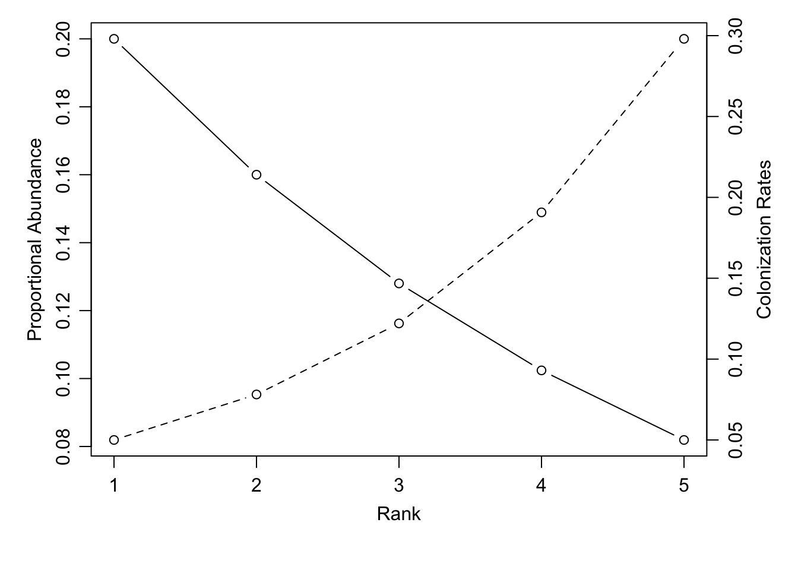
Successional dynamics of prairie grasses Here, we set all mortality rates to the same value, one per species, pool all the necessary parameters into a vector (params), and select initial abundances. The initial abundances are merely very low abundances as might be the case in early successional dynamics.
params <- list(ci=c.rates, # colonization rates
m=rep(m, no.of.species), # mortalities
S=no.of.species,
D=0 # habitat destruction
)
init.N <- rep(0.1, no.of.species) # initial abundances
t <- seq(1, 200, .1) # time
cc.out <- ode(init.N, t, compcolM, params)cc.df <- as.data.frame(cc.out) %>%
pivot_longer(cols=-time, names_to="Life_history")
p <- ggplot(data=cc.df,
aes(x=time, y=value, linetype=Life_history)) +
geom_line() +
labs(y = "Proportion of Habitat", x = "Years")
p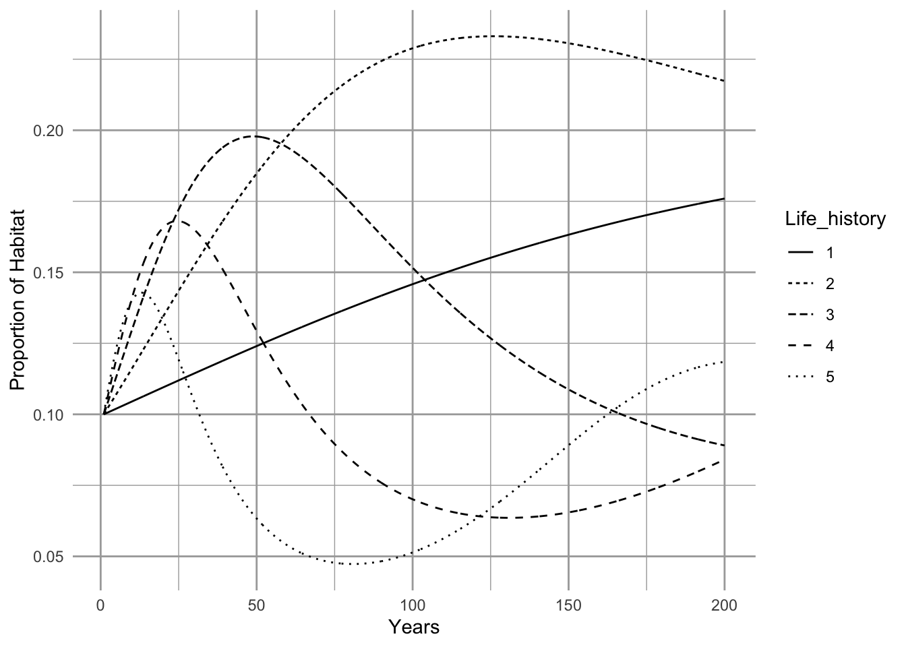
Tilman and Downing (1994) startled folks when they showed that a common scenario of habitat destruction led to a perfectly counterintuitive result: that habitat destruction led to the very slow but deterministic loss of the best competitor. It was unsettling not only that the dominant species would be lost first (Nee and May 1992), but also that the loss of dominant species will take a long time (Tilman and Downing 1994). This implied that we would not realize the true cost of habitat destruction until long after the damage was done. These two conclusions posed a problem for conservationists:
- Species that were thought safe from extirpation at local scales — the best competitors — could actually be the ones most likely to become extinct, and further,
- That the process of extinction may take a long time to play out, and so the data demonstrating this loss might require a long time to collect (Fig. Figure 9.3).
These two predictions constitute the original conception for extinction debt. However, the term has become more broadly used to described the latter phenomenon, that extinction due to habitat destruction may take a long time, and current patterns may be a function of past land use (Helm et al. 2006; Lindborg and Eriksson 2004).
We see (Fig. Figure 9.3) the predictable, if counterintuitive, result: the most abundant species, the competitive dominant, becomes extinct over a long period of time, and the next best competitor replaces it as the most abundant species.
Competition is a local phenomenon, and the better competitor can typically hold onto a given site; however, individuals of all species eventually die. Therefore, for two species to actually coexist in a landscape, even the best competitor must colonize some new space at some point. If habitat destruction reduces habitat availability too far, the worst colonizer (i.e., the best competitor) will be unable to disperse effectively to new habitat.
Demonstrating effects of habitat destruction
We use the same functions and parameters as above. We add habitat destruction for a quarter of the available habitat, which is greater that the equilibrium for the dominant species, and will result in the slow loss of the dominant species. We also start the species off at their equilibrium abundances, determined by the geometric distribution.
params["D"] <- 0.25
init.N <- eval(geometric)
t <- 0:1000
cchd.out <- ode(init.N, t, compcolM, params)
cchd.df <- as.data.frame(cchd.out) %>%
pivot_longer(cols=-time, names_to="Species")
p <- ggplot(data=cchd.df,
aes(x=time, y=value, linetype=Species)) +
geom_line() + lims(y=c(0, .25)) +
labs(y = "Proportion of Habitat", x = "Years")
p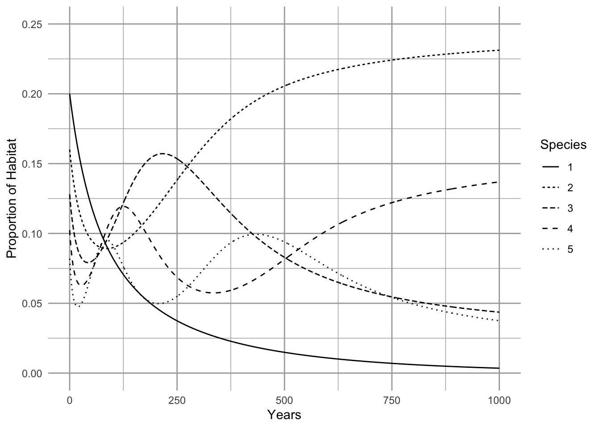
9.2 Adding Reality: Finite Rates of Competitive Exclusion
While the competition–colonization tradeoff is undoubtedly important, it ignores a fundamental reality that may also be very important: the models above assume competitive exclusion is instantaneous. That assumption may be approximately or qualitatively correct, but on the other hand, it may be misleading. Given the implications of extinction debt for conservation, it is important to explore this further. Indeed, Pacala and Rees (1998) did so, and came to very different conclusions than did Tilman et al. (Tilman 1994). This section explores the work of Pacala and Rees (Pacala and Rees 1998).
To add a little natural history to our thinking, we should recognize several issues. First, species often show correlated traits: good colonizers often have high maximum growth rates, and high metabolic rates and allocation to reproductive tissue. We refer to these species as r-selected species (MacArthur and Wilson 1967; MacArthur 1962). Second, when deaths of individuals free up resources, individuals with high maximum growth rates can take advantage of those high levels of resources to grow quickly and reproduce. Third, competitive exclusion takes time. The arrival of a propagule of a superior competitor next to a poor competitor doesn’t cause the instantaneous reduction of resources and exclusion of the poor competitor. Rather, the poor competitor may continue to grow and reproduce even in the presence of the superior competitor prior to the reduction of resources to equilibrium levels. It is only over time, and in the absence of disturbance, that better resource competitors will tend to displace individuals with good colonizing ability and high maximum growth rates.
Pacala and Rees (1998) examined the effect of finite rates of competitive exclusion on the competition–colonization tradeoff. Implicit in this is the role of maximum growth rate as a trait facilitating coexistence in the landscape. High growth rate can allow a species to reproduce prior to resource reduction and competitive exclusion. This creates an ephemeral or temporary opportunity, and Pacala and Rees referred to this as the successional niche. Species that can take good advantage of the successional niche are thus those with the ability to disperse to, and reproduce in, sites where resources have not yet been depleted by superior competitors. To facilitate their investigation, Pacala and Rees added finite rates of succession to a simple two species competition–colonization model.
Possible community states
They envisioned succession on an open site proceeding via three different pathways. They assumed that the following:
- late successional species
- superior competitor,
- slow growth rate,
- low colonizing rate,
- early successional species
- inferior competitor,
- high growth rate,
- high colonizing rate.
- competitive exclusion takes time.
They identified five possible states of the successional community (Fig. Figure 9.4).
- Free — Open, unoccupied space.
- Early — Occupied by only the early successional species.
- Susceptible — Occupied by only the late successional species and susceptible to invasion by the early successional species because resource levels have not yet been driven low enough to exclude the early successional species.
- Mixed — Occupied by both species, and in transition to competitive exclusion.
- Resistant — Occupied by only the late successional species and resistant to invasion because resource levels have been driven low enough to exclude early successional species.
Given the five states, succession can then proceed along any of three pathways (Fig Figure 9.4):
- Free \(\rightarrow\) Early \(\rightarrow\) Mixed \(\rightarrow\) Resistant,
- Free \(\rightarrow\) Susceptible \(\rightarrow\) Mixed \(\rightarrow\) Resistant,
- Free \(\rightarrow\) Susceptible \(\rightarrow\) Resistant.
knitr::include_graphics("figs/PandR.pdf")In this context, Pacala and Rees reasoned that the competition–colonization tradeoff focuses on mutually exclusive states, and assumes there are only Free, Early, and Resistant states. In contrast, if species coexist exclusively via the competition–maximum growth rate tradeoff, then we would observe only Free, Mixed, and Resistant states. They showed that these two mechanisms are not mutually exclusive and that the roles of finite rates of competitive exclusion and the successional niche in maintaining diversity had been underestimated.
Note that the interpretation of this model is thus a little different than other models that we have encountered. It is modeling the dynamics of different community states. It makes assumptions about species traits, but tracks the frequency of different community states. Technically speaking, any metapopulation model is doing this, but in the contexts we have seen, the states of different patches of the environment were considered to be completely correlated with the abundance of each species modeled. Here we have five different state variables, or possible states, and only two species.
The traits of the two species that create these four states are embedded in this model with four parameters, \(c\), \(\alpha\), \(m\), and \(\gamma\). There is a base colonization rate, \(c\), relative colonization rate of the poor competitor, \(\alpha\), mortality (or disturbance rate), \(m\), and the rate of competitive exclusion, \(\gamma\). We could think of \(\gamma\) as the rate at which the better competitor can grow and deplete resources within a small patch. We model the community states as follows, using \(F\) to indicate a fifth state of Free (unoccupied) space. \[ \begin{aligned} \frac{dS}{dt}& = \left[ c\left(S+R+M\right)\right]F - \left[\alpha c\left(M+E\right)\right]S - \gamma S - mS\\ \frac{dE}{dt}& = \left[\alpha c\left(M+E\right)\right]F - \left[ c\left(S+R+M\right)\right]E - mE\\ \frac{dM}{dt}& = \left[\alpha c\left(M+E\right)\right]S + \left[ c\left(S+R+M\right)\right]E - \gamma M - mM\\ \frac{dR}{dt}& = \gamma\left( S + M\right) - mR\\ F&= 1-S-E-M-R \end{aligned} \tag{9.12}\]
9.2.1 Successional niche model
In addition to representing the original successional niche model, the primer package also slips in a parameter for habitat destruction, \(D\). As with the above model, habitat destruction \(D\) is simply a value between 0–1 that accounts for the proportion of the habitat destroyed. Pacala and Rees (1998) didn’t do that, but we can add it here. We also have to ensure that \(F\) cannot be negative.
succniche <- function(t, y, params) {
S <- y[1]; E <- y[2]; M <- y[3]; R <- y[4]
F <- max(c(0,1 - params["D"] - S - E - M - R))
with(as.list(params), {
dS = c*(S+R+M)*F - a*c*(M+E)*S - g*S - m*S
dR = g*(S+M) - m*R
dM = a*c*(M+E)*S + c*(S+R+M)*E - g*M - m*M
dE = a*c*(M+E)*F - c*(S+R+M)*E - m*E
return( list( c(dS, dE, dM, dR)))
})
}Now we can examine the dynamics of this model. When we make the rate of competitive exclusion very high, the model approximates the simple competition–colonization tradeoff (Fig. Figure 9.4)3 The susceptible and mixed states are not apparent, and the better competitor slowly replaces the good colonizer.
3 When \(\gamma=5\), this means that in one year, exclusion will be 99.3% complete, because it is a pure negative exponential process, where \(X_t=X_0e^{\gamma t}\). Similarly, recall our calculation of doubling time, \(t=log(X)/r\), where \(X\) is the relative size of the population (e.g., 2, if the population doubles); here \(r<0\) and time is \(< 1\).
9.2.2 Dynamics of the successional niche model with a high rate of competitive exclusion
For no particular reason, we pretend that the poor competitor is \(7 \times\) as fast at colonizing (\(\alpha=7\)), and that the rate of competitive exclusion is very high, \(\gamma=5\). We assume mortality is low, and there is no habitat destruction.
params.suc <- c(a=7, # rel. colonizing rate of Early
c=0.2, # colonizing rate of Late
g=5, # rapid competitive exclusion
m=0.04, # background mortality
D=0 # no habitat destruction
)Next we let time be 50 y, and initial abundances reflect a competitive advantage to the early successional species, and run the model.
t=seq(0,50,.1)
init.suc <- c(S=0.01, E=0.03, M=0.0, R=0.00)
init.suc <- c(S=0.45, E=0.55, M=0.0, R=0.00)
ccg.out <- ode(init.suc, t, succniche, params.suc)Last we plot our projections.
ccg.df <- as.data.frame(ccg.out) %>%
pivot_longer(cols=-time, names_to="State")
ggplot(ccg.df, aes(x=time, y=value,
linetype=State, color=State)) +
geom_line() 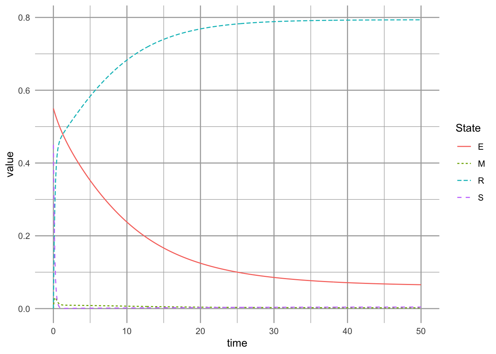
9.2.3 Dynamics of the successional niche model with a low rate of competitive exclusion
Now let’s slow down competitive exclusion, that is, we will slow the transition from \(M\) to \(R\). We set \(\gamma\) to be a small number, so that only 10% of the mixed plots become resistant plots over one year (\(\gamma=0.1\)). When we slow down competitive exclusion, we see that we get persistence of both species (Fig. Figure 9.6). First, we get greater frequency of the mixed state, where we always see a large fraction of the mixed habitat occupied by both species (state \(M\)), relative to the case with rapid competitive exclusion (Fig. Figure 9.5). In addition, we see a higher proportion of habitat in early succession phase (state \(E\)).
Here we slow down the rate of competitive exclusion, and 90% of the mixed sites stay mixed after a one year interval.
params.suc["g"] <- .1; exp(-.1)[1] 0.9048374ccg.out <- ode(init.suc, t, succniche, params.suc)We plot our projections.
ccg.df <- as.data.frame(ccg.out) %>%
pivot_longer(cols=-time, names_to="State")
ggplot(ccg.df, aes(x=time, y=value,
linetype=State, color=State)) +
geom_line() 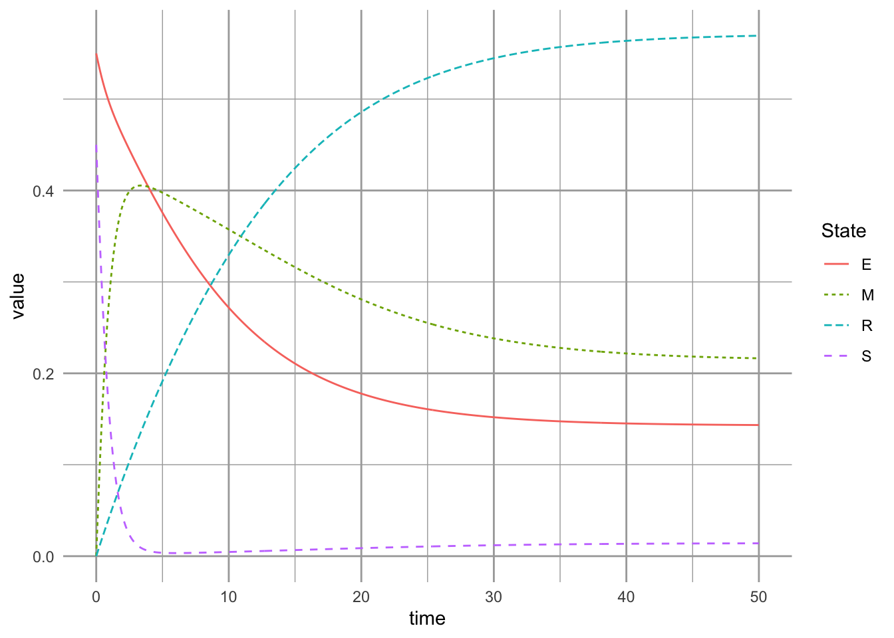
9.2.4 Dynamics of the successional niche model with an intermediate disturbance regime
Now let’s imagine that mortality rate increases from 1% (Fig. Figure 9.5) to 10% (Fig. Figure 9.7). (\(m=0.04\) vs. \(m=0.105\)). With this moderate disturbance rate, the system takes longer to approach an equilibrium, and also has a higher frequency of sites with just the early sucessional species (Fig. Figure 9.7). This reflects the mechanisms underlying the intermediate disturbance hypothesis (Connell 1978). At very low disturbance rates, the best competitor prevails. At moderate disturbance rates, however, we have far more habitat that supports both pioneer species (good colonizers) as well as climax species (superior competitor). Note that slowing down competitive exclusion (Fig. Figure 9.6) or increasing the disturbance rate (Fig. Figure 9.7) result in similar frequencies of both species, but via different mechanisms.
Here we keep a low rate of competitive exclusion (as above), but higher disturbance rates (10% of the habitat is disturbed each year).
params.suc["m"] <- 0.105 # higher disturbance rate
ccg.out <- ode(init.suc, t, succniche, params.suc)
ccg.df <- as.data.frame(ccg.out) %>%
pivot_longer(cols=-time, names_to="State")
ggplot(ccg.df, aes(x=time, y=value,
linetype=State, color=State)) +
geom_line() 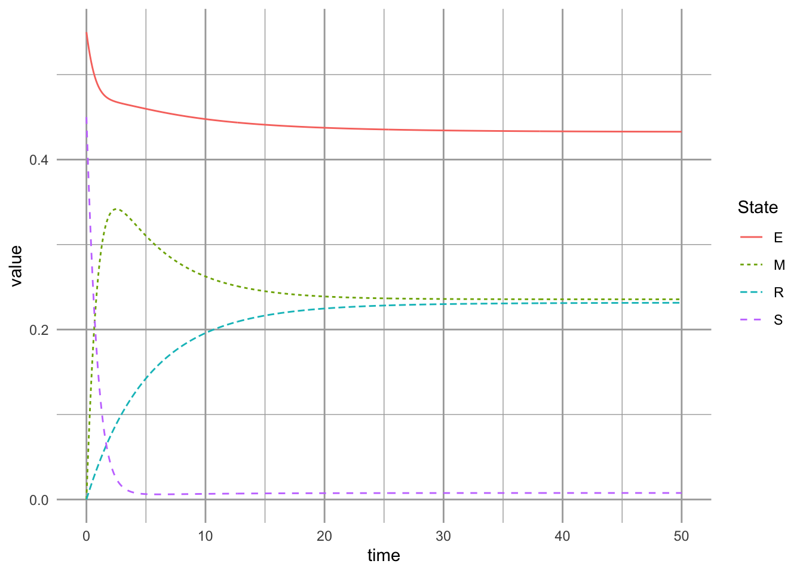
9.2.5 Dynamics of the pure successional niche model
Now let’s explore the pure successional niche. Imagine that there is no competition–colonization tradeoff: both species have high colonization rates, but the superior competitor retains its competitive edge. However, we also assume that the rate of competitive exclusion is finite (\(\gamma \ll \infty\)). The pure competition–colonization model would predict that we do not get coexistence. In contrast, we will find that the successional niche model allows coexistence. Let’s set the relative competitive ability equal (\(\alpha=1\)) and increase the base colonization rate to the higher of the two original rates (\(c=7\)). We also let the rate of competitive exclusion be small (\(\gamma < 1\)).
What do the dynamics of the pure successional niche model look like (Fig. Figure 9.8)? We see that we achieve coexistence because the system retains both the mixed state and the resistant state. With both species colonizing everywhere (high \(c\)), the successional niche allows coexistence because of the finite rate of competitive exclusion. Species 1 now occupies primarily the successional niche, persisting in only the mixed state \(M\) (Fig. Figure 9.8).
Here we equal and high colonization rates, and a slow rate of competitive exclusion.
params.suc <- c(a=1, c=.7, g=.1, m=0.04, D=0)
ccg.out <- ode(init.suc, t, succniche, params.suc)
ccg.df <- as.data.frame(ccg.out) %>%
pivot_longer(cols=-time, names_to="State")
ggplot(ccg.df, aes(x=time, y=value,
linetype=State, color=State)) +
geom_line() 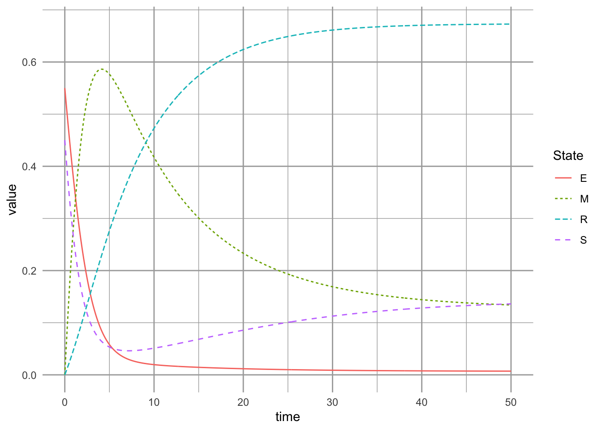
9.2.6 An analytical solution
Let’s consider the successional niche analytically by effectively eliminating colonization limitation for either species (\(c>>1\), \(\alpha=1\)). If there is no colonization limitation, then propagules of both species are everywhere, all the time. This means that states \(F\), \(E\), and \(S\) no longer exist, because you never have free space or one species without the other. Therefore \(M\) is one of the remaining states. The only monoculture that exists is \(R\), because in \(R\), both propagules may arrive, but the early successional species 1 cannot establish. Therefore the two states in the pure successional niche model are \(M\) and \(R\).
How does \(M\) now behave? \(M\) can increase when \(R\) dies back, and \(M\) will decrease through competitive exclusion. We might also imagine that \(M\) would decrease through its own mortality; we have stipulated, however, that colonization is not limiting. Therefore, both species are always present, if only as propagules. The rate of change for \(M\) is, \[\frac{d M}{d t} = mR - \gamma M\] while R uses the rest of the space, \(R = 1-M\).
The equilibria for the two states can be found by first setting \(\dot{M}=0\) and substituting \(1-M\) in for \(R\), as \[\begin{align*} 0 &= m\left(1-M\right) - \gamma M\\ M^* &= \frac{m}{\gamma + m} \end{align*}\] making \[R^* = \frac{\gamma}{\gamma+m}\].
Up until now, we have focused on the frequencies of the four states, rather than the frequencies of the two types of species (early successional and competitive dominant). If we are interested in the relative abundances of the two types of species, we merely have to make assumptions about how abundant they are in each different state. If we assume that they are equally abundant in each state, then the abundance of the early successional species is \(E+M\) and the abundance of the competitive dominant is \(S+M+R\).
9.2.7 Extinction debt with the successional niche?
Let us finally investigate extinction debt under the assumption of the successional niche. First, we verify that we get extinction debt with the parameterization that represents the simple competition-colonizaiton tradeoff. Second, we reduce \(\gamma\) and \(\alpha\) to make the successional niche the primary mechanism, and see what happens to the pattern of extinction.
Dynamics of the extinction with the successional niche model
Here we approximate the competitive-colonization model with unequal colonization rates, and a very high rate of competitive exclusion. We then find, through brute force, the equlibria for our parameter set by integrating a long time and keeping the last observations as the equilibria.
params.1 <- c(a=10, c=.1, g=10, m=0.04, D=0)
equilibria.CC <- ode(init.suc, 1:500, succniche, params.1)[500, -1]We then create enough habitat destruction to eliminate the late successional species, and plot the result.
params.1D <- c(a=10, c=.1, g=10, m=0.04, D = 0.6)
t <- 1:1000
ccg.out1D <- ode(equilibria.CC, t, succniche, params.1D)
ccg.df <- as.data.frame(ccg.out1D) %>%
pivot_longer(cols=-time, names_to="State")
ggplot(ccg.df, aes(x=time, y=value,
linetype=State, color=State)) +
geom_line() 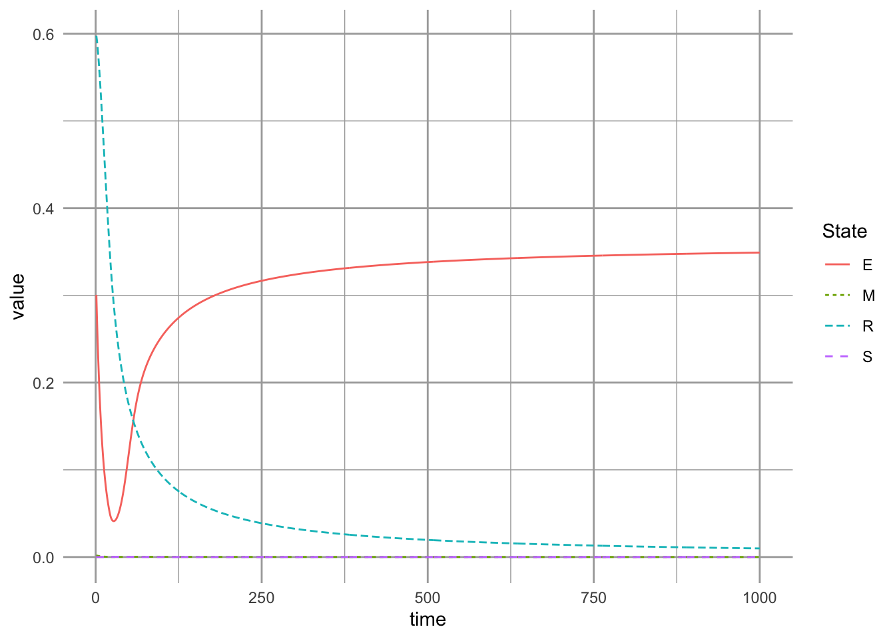
Next, we use the successional niche, by making colonization rates equal and high, and \(\gamma\) small (i.e., competitive exclusion slow). We then find our equilibria, without habitat destruction.
params.2 <- c(a=1, c=1, g=.1, m=0.04, D=0)
equilibria.SN <- ode(init.suc, 1:500, succniche, params.2)[500, -1]We then create habitat destruction, and plot the result.
params.2D <- c(a=1, c=.7, g=.1, m=0.04, D=0.7)
ccg.out2D <- data.frame(ode(equilibria.SN, t, succniche,
params.2D))
ccg.df <- as.data.frame(ccg.out2D) %>%
pivot_longer(cols=-time, names_to="State")
ggplot(ccg.df, aes(x=time, y=value,
linetype=State, color=State)) +
geom_line() 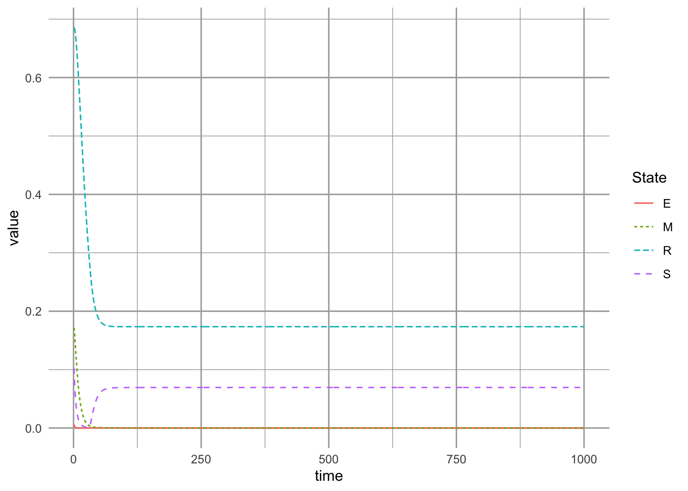
We can compare patterns of extinction under these two scenarios (Fig. Figure 9.9, without and with the successional niche). In doing so, we find a complete reversal of our conclusions: when the primary mechanism of coexistence is the successional niche, we find that the competitive dominant persists, rather than the early successional species.
These opposing predictions regarding the extinction debt highlight the important of getting the mechanism right. They also illustrate the power of simplistic models to inform understanding.
9.3 Storage effect
What if all of this is wrong? What if none of these tradeoffs underlie coexistence? Jim Clark and his colleagues (Clark et al. 2004) examined dispersal traits of co-occurring deciduous forest trees (fecundity, dispersal), and successional status, and found no evidence that early successional species had higher dispersal capacity. This suggests a lack of support for competition–colonization tradeoffs among coexisting species in a persistent community. Rather, they found evidence that asynchronous success in reproduction of these long-lived organisms allowed them to coexist. These traits helped generate a mechanism referred to as the storage effect Warner and Chesson (1985).
The storage effect occurs when a species’ interspecific competitive ability varies with the environment and does so in a way that helps it persist (Barabás et al. 2018; Ellner et al. 2019). It was first seen when competing species benefited from conditions that were uniquely good for it, but could also store energy for reproduction during bad times until favored conditions arise Warner and Chesson (1985). The storage effect is not a particular model as is the case with Lotka-Volterra competition models. Rather, it is a set of assumptions or conditions which allow persistence.
Assumptions include:
- Differential responses Each species benefits from a different environment, such that each encounters both favorable and unfavorable periods for reproduction.
- Environment–competition covariation The same conditions that favor reproduction for a particular species also increase competition intensity for that species.
- Buffered population growth Each species has a resistant stage (e.g., long lived adults, seeds, spores, eggs) that prevents unfavorable times from being so bad as to drive the species extinct.
All of this depends on an assumption about the environment, that it fluctuates in a manner to which species respond. Environmental fluctuation is common in nature, and is a necessary condition for this model.
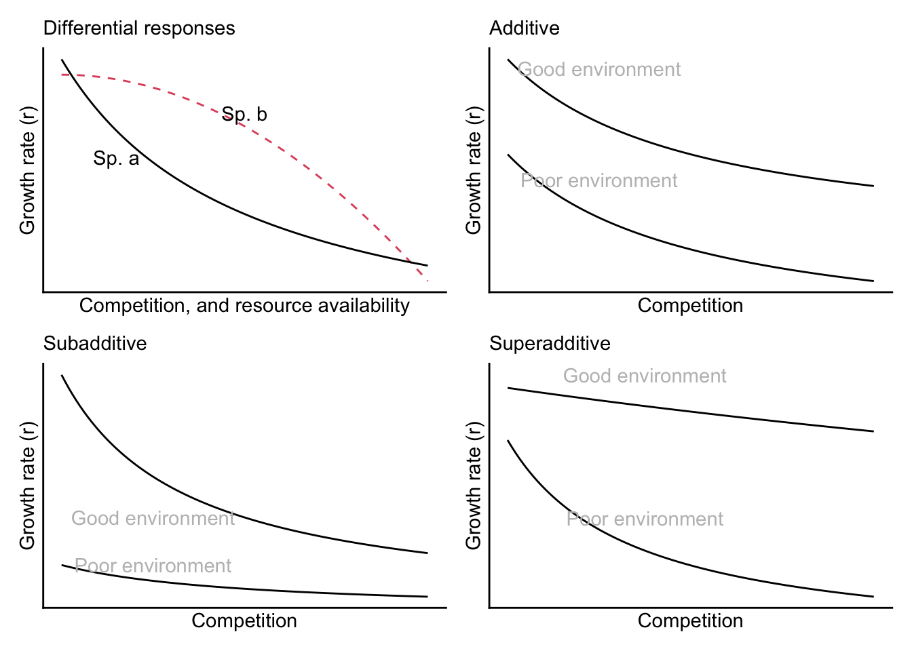
Mathematically, the storage effect is often represented with the time-dependent per capita growth of a species as,
\[r(t) = E(t) - C(t) + \gamma E(t) C(t)\] and can also be represented by average4 long term growth rates,
4 the bar over the variables indicates ‘average’.
\[\bar{r} = \bar{E} - \bar{C} + \gamma \left( \bar{E}\bar{C} - \mathrm{Cov}(\bar{E},\bar{C}) \right)\]
where,
- the bars over variables indicate long-term averages,
- \(r_t\) is the per capita growth rate at time \(t\),
- \(E(t)\) is the relative benefit or contribution of the environment to \(r(t)\) at time \(t\),
- \(C(t)\) is the relative cost of competition to \(r(t)\) at time \(t\),
- \(\gamma\) is the magnitude of the storage effect,
- \(\gamma E(t) C(t)\) is the storage effect, and
- \(\mathrm{Cov()}\) is the covariance operator.
If, for instance, winter rains favor a particular desert annual, that desert annual will experience the greatest intraspecific competition following a wet winter precisely because of its large population size.
One prediction of the storage effect is that small population sizes will be more variable (have higher \(CV\), coefficient of variation) than large populations of competing species. This was observed in phylogenetically controlled comparisons of tropical tree species (Kelly and Bowler 2002).
The temporal storage effect constitutes a temporal niche. The theory simply stipulates that different species succeed at different times. For rare species to coexist with common species, their relative success needs to be greater than the relative success of common species . In the absence of environmental variability, species would not coexist. For this kind of niche to ensure coexistence, all of the above assumptions must be met.
A spatial storage effect can occur also occur, when responses to different locations in the environment and dispersal of individuals allows a population to experience both good and bad environments.
9.4 An example of the temporal storage effect
The storage effect was first proposed as a special case of lottery models (Morin 1999). Originally developed for reef fishes (Sale 1977), lottery models are considered general models for other systems with important spatial structure such as forest tree assemblages. Conditions associated with lottery systems include:
- Juveniles (seedlings, larvae) establish territories in suitable locations and hold this territory for the remainder of their lives. Individuals in non-suitable sites do not survive to reproduce.
- Space is limiting; there are always far more juveniles than available sites.
- Juveniles are highly dispersed such that their relative abundances and their spatial distributions are independent of the distribution of parents.
These conditions facilitate coexistence because the same amount of open space has a greater benefit for rare species than for common species. While the invulnerable nature of successful establishment slows competitive exclusion, permanent nonequilibrium coexistence does not occur unless there is a storage effect, such as with overlapping generations, where a reproductive stage (resting eggs, seeds, long lived adults) buffers the population during unfavorable environmental conditions, and negative environment–competition covariation.
Here we provide an example of a two-species competition model that exhibits a temporal storage effect for each species \(i\) in the community (Chesson 1994). You will notice that the model is a discrete-time model, like geometric growth or our demographic stage-based models.
\[N_{i,t+1} = \left(1-d\right)N_{i,t} + R_{i,t}N_{i,t}\] where \(N_{i,t}\) is the abundance of species \(i\) at time \(t\), \(d\) is death or mortality rate. Rate \(R_{i,t}\) is the total per capita reproduction of species \(i\), much like the finite rate of increase we saw in Chapters 3 & 4.
Next, we see that \(R_{i,t}\) is a function of species \(i\)’s response to the environment and competition. \[R_{i,t} = e^{E_{i,t} - C_{i,t}}\]
The species’ response to the environment, \(X\), is \[ E_{i,t} = F\left( X_{i,t} \right)\] is an unspecified function of the environment, \(X_{i,t}\), so that \(E_{i,t}\) differs among species and across time. We can think of \(exp(E_{i,t})\) (the first growth factor in \(R_{i,t}\)) as the maximum per capita reproductive rate for species \(i\), at time \(t\), in the absence of competition. It is determined by the environment \(X\) at time \(t\).
The species’ response to competition depends specifically on the abundances, \(N_i\), of all species from \(i=1,\ldots,S\), \[C_{i,t} = \sum_{i=1}^S\alpha_i e^{E_{i,t}}N_{i,t} \tag{9.13}\] where \(e^{E_{i,t}}N_{i,t}\) intensifies competition at large population sizes during favorable conditions, and lessen competition at low population sizes during poor conditions. This introduces the nonadditive responses required by the storage.
There are many other representations of the storage effect (Ellner et al. 2019), but this is a simple and convenient one (Chesson 1994).
9.4.1 Building a simulation of the storage effect
Here we simulate one rare and one common species, wherein the rare species persists only via the storage effect. We conclude with a simple function, chesson, that simplifies performing more elaborate simulations.
Fluctuating environment
First we create a variable environment. Environments are frequently noisy and also temporally autocorrelated — we refer to a special type of scale-independent autocorrelation as red noise or \(1/f\) noise (“one over f noise”) (Halley 1996). Here we use simply white noise, which is not temporally autocorrelated, but rather, completely random at the time scale we are examining.
years <- 100
t <- 1:years
variability = 4
env <- rnorm(years, m=0, sd=variability)
plot(t, env, type='l')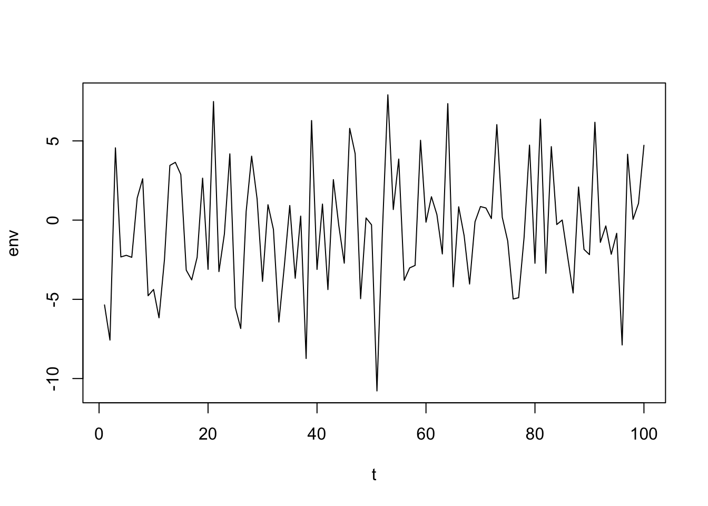
Differential responses to the environment
A key part of the storage effect is that species have differential reproduction in response to a fluctuating environment (Fig. Figure 9.10). However, species can differ for all sorts of reasons. Therefore, we will let our two species have different average fitness. We do this specifically because in the absence of the stochastic temporal niche of the storage effect, the species with the higher fitness would eventually replace the rare species. We want to show that the storage effect allows coexistance in spite of this difference. We will let these fitnesses be
w.rare <- .5
w.comm <- 1but as we will see in the simulation, competitive exclusion does not happen — the species coexist. For the example we are building (Fig. Figure 9.10), we will pretend that
- our rare species grows best when the environment (maybe rainfall) is above average,
- our common species grows best when the environment is below average, and,
- both grow under average conditions; their niches overlap, and we will call the overlap rho, \(\rho\).
As merely a starting point, we let overlap, \(\rho\), be equal to the standard deviation of our environmental variabiity.
rho <- sd(env)include_graphics("figs/rho.pdf")
# include_graphics("Buffered growth rates")Code for a pretty histogram (Fig. Figure 9.11)
Here we simply create a pretty histogram.
hist.env <- hist(env,col='lightgray',main="Histogram of Environment")
abline(v=c(c(-rho, rho)/2), lty=3)
arrows(x0=-rho/2, y0=mean(hist.env[["counts"]]),
x1=rho/2, y1=mean(hist.env[["counts"]]), code=3, length=.1)
text(0, mean(hist.env[["counts"]]), quote(italic(rho)), adj=c(1.5,0), cex=1.5)
text(min(hist.env[["breaks"]]),mean(hist.env[["counts"]]),
"Common sp.\ngrows best", adj=c(0,0))
text(max(hist.env[["breaks"]]),mean(hist.env[["counts"]]),
"Rare sp.\ngrows best", adj=c(1,0))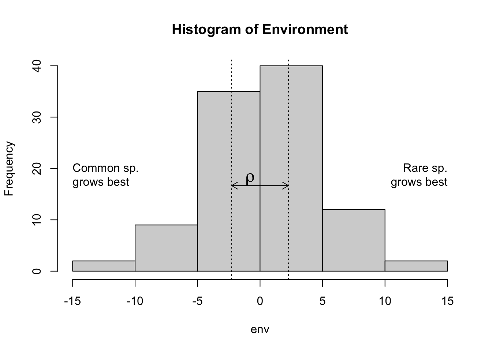
To quantitfy reproduction as a function of the environment, we will simply let each species growth rate be, in part, the product of its fitness and the environment, with the sign appropriate for each species.
a.rare <- (env+rho/2)*w.rare
a.comm <- -(env-rho/2)*w.commThis will allow the rare species to have highest reproduction when the environment variable is above average, and the common species to have high reproduction when the environmental variable is below average. It also allows them to share a zone of overlap, \(\rho\), when they can both reproduce (Fig. Figure 9.10).
Buffered population growth
A key feature of the storage effect is that each species has buffered population growth. That is, each species has a life history stage that is very resistant to poor environmental conditions. This allows the population to persist even in really bad times. In some cases, the resistant stage may be a long-lived adult, as with many tree species, or other large-bodied organisms. In other cases, species have very resistant resting stages, such as the eggs of zooplankton (Cáceres 1997), or the seeds of annual plants (Facelli et al. 2005).
To model this buffering effect, we will simply prevent the reproductive rates from falling below zero. (We will, however, create mortality (below) that is independent of the growth rate of each species). Let us impose this constraint of reproduction \(\ge 0\) now.
Es <- matrix(NA, nrow=years, ncol=2)
Es[,1] <- ifelse(a.rare > 0, a.rare, 0)
Es[,2] <- ifelse(a.comm > 0, a.comm, 0)
matplot(t, Es, type='l', col=1)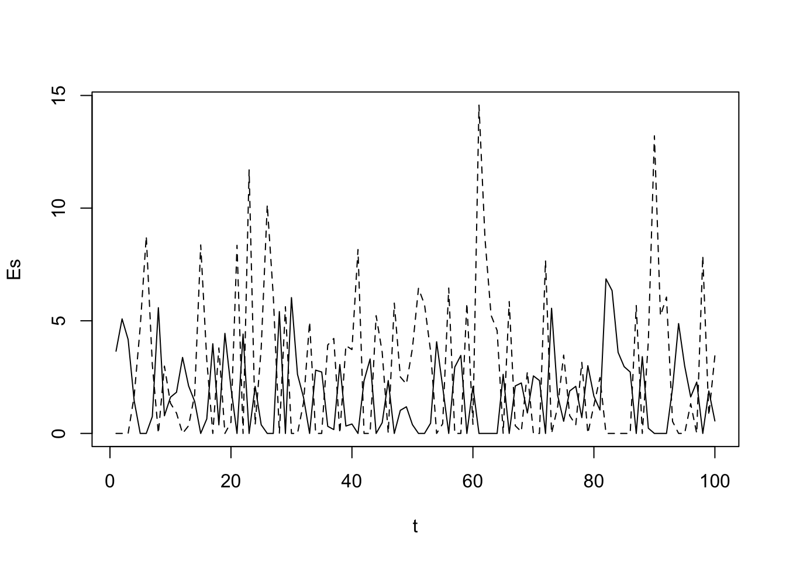
matplot(env,Es, col=1)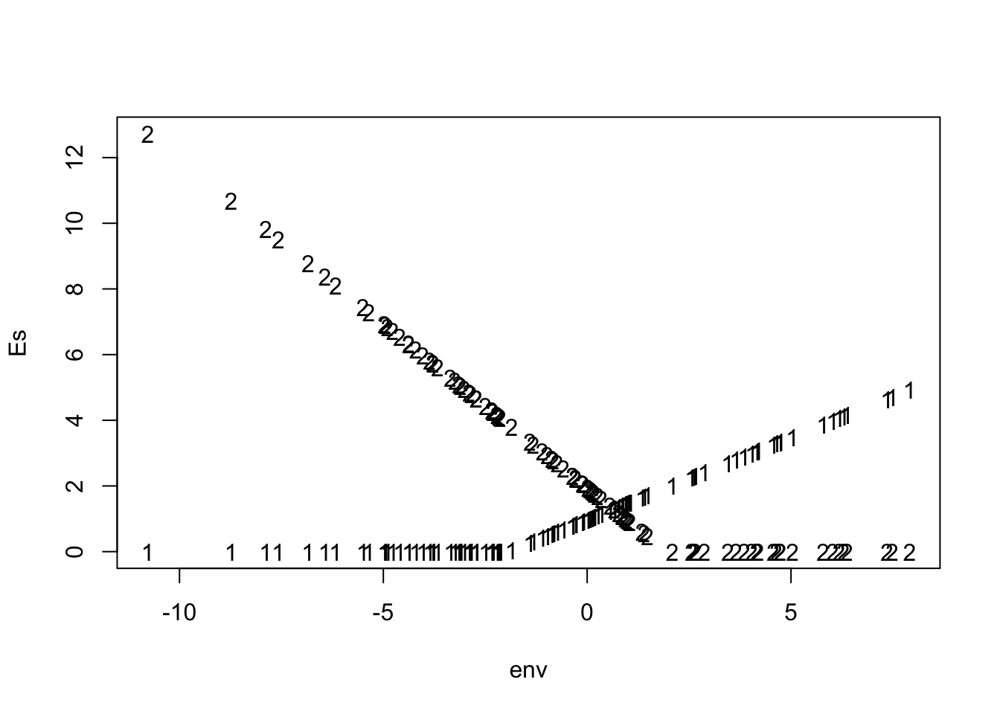
As we said, however, organisms will die. Let us create a variable for community-wide mortality, \(\delta\), as if a disturbance kills a constant fraction of the community.
d <- 0.1Covariance between competition and environment
We also want to assume that species compete for shared, limiting resources. Individuals have negative effects on each other. As a result, the more individuals of all species there are (increasing \(N_{total}\)), the more negative the total effect is. To account for this, we will stipulate a per capita negative effect \(\alpha\) of any individual on any other. Therefore, in good times (high \(N_{total}\)), the effect of competition increases. In contrast, when times are bad, and \(N\) is small, competition is low. This is what Chesson and colleagues mean by covariation between competition and the environment.
Eq. (Equation 9.13) provides a reasonable way to represent the competitve effect \(C_{i,t}\). Here we simplify further, and assume that the per capita effect of competition on growth is constant through time. However, to emphasize that point that one species has higher average fitness, we let the rare species experience greater per capita effects of competition. For our example, let us set \(\alpha_{rare}=0.0002, \alpha_{comm}=0.0001\).
alpha <- c(2*1e-5,1e-5)Thus, these \(\alpha\) are the species-specific effects of all individuals on the rare and common species.
9.4.1.1 Simulating dynamics
Finally, we simulate these dynamics. We should create matrices to hold stuff as we simulate each year, for \(N\), \(C\), and \(R\). Unlike \(E\), these are simplest to collect as we simulate \(N\), year by year.
Ns <- matrix(NA, nrow=years+1, ncol=2)
Cs <- matrix(NA, nrow=years, ncol=2)
Rs <- matrix(NA, nrow=years, ncol=2)Next we initialize our populations at \(t_0\).
Ns[1,] <- c(1e3,1e5)Finally, we run the for-loop
for(i in 1:years) Ns[i+1,] <- {
juveniles <- sum( exp(Es[i,]) * Ns[i,] )
Cs[i,] <- alpha*juveniles
#Cs[i,] <- log(juveniles/sum(d*Ns[i,]))
Rs[i,] <- exp(Es[i,]-Cs[i,])
(1-d) * Ns[i,] + Rs[i,]*Ns[i,]
}and plot the populations.
matplot(c(0,t), Ns, type='b', log='y')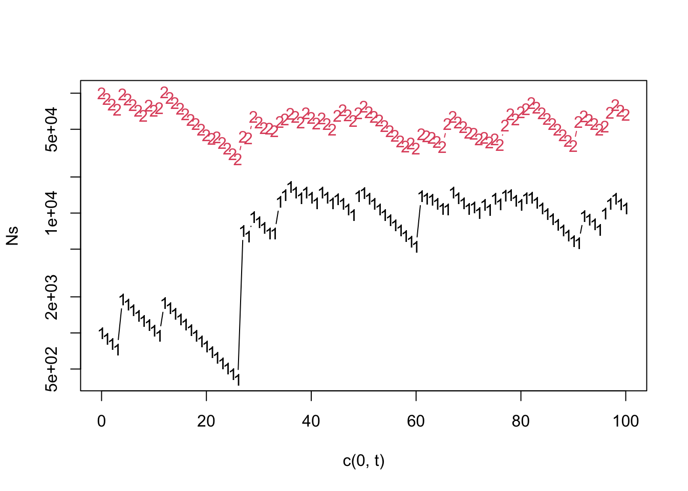
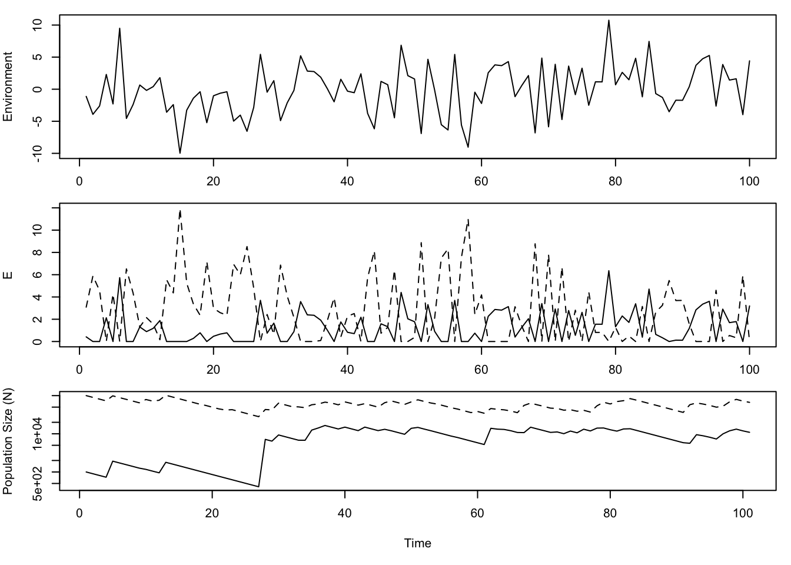
9.4.1.2 Examining characteristics of the storage effect
Let us go back and examine a few of the characteristics that we should observe, if the storage effect is operating. First, note that above we showed differential responses to the environment, incomplete niche overlap, and buffered growth (Fig. Figure 9.10).
Next, we will try to examine the environment-competition covariation. This is not trivial, and papers are written about how to estimate this. For now, recall that in Section 6.1, we began with an examination of negative density-dependence. Here we quantify the magnitude of this negative effect, as our effect of competition. Let us invent a new value, \(\nu\), to measure how much the observed growth rate is affected by large population sizes, \[ \nu_{i,t} = \log\left(\frac{R_{max}}{R_{i,t}}\right) \tag{9.14}\] where \(R_{i,t}\) is the observed annual population growth rate, \(N_{t+1}/N_t\), for species \(i\), and \(R_{max}\) is the maximum of these.
To measure the covariation, we will find first \(N_{total,t}\), \(R_{i,t}\), and \(R_{i,max}\).
Nt1 <- rowSums(Ns)[1:years]
R.obs <- Ns[-1,]/Ns[-(years+1),]
Rmax <- apply(R.obs,2,max)Now we calculate \(\nu_i\), and estimate the covariance.
nu <- log( t(Rmax / t(R.obs) ) )
colnames(nu) <- c("nu.rare", "nu.comm")
var(Nt1,nu) nu.rare nu.comm
[1,] 602.929 798.7038This illustrates that both populations exhibit positive covariation between the quality of the environment (defined operationally as \(N_{total}\)) and the intensity of competition.
Last, recall that we stated above that the \(CV\) (coefficent of variation) should be greater for rare species than for common species. If we check that for our populations (eliminating the first half of the time series),
apply(Ns[round(years/2):years,], 2, function(x) sd(x)/mean(x) * 100)[1] 37.08421 23.98696we see that, indeed, the rare species has a higher \(CV\). Examination of the time series (Fig. Figure 9.12) confirms this.
To facilitate playing more games, the function chesson provides an easy wrapper for storage effect simulations (Fig. Figure 9.13). Please try ?chesson at the R prompt.
Here we run chesson, and calculate the overlap, \(\rho\), for each simulation.
By specifying greater specialization and greater spread between the environmental optima of the species pair in the second model, we have reduced niche overlap (Fig. @ref(beta1)). Overlap in this model is the area under both species fitness-independent response curves. Note that large differences in overall fitness can alter effective overlap described by the density-independent reproductive rate, \(E_{i,t}\) (Fig. @ref(betaE)).
matplot(outB[['env']], outB[['Bs']], pch=1:2, xlim=c(-.6,.6),
ylab="Fitness-independent Response", xlab="Environment")
matplot(outA[['env']], outA[['Bs']], pch=c(19,17), add=TRUE)
bs <- outB[["Bs"]][order(outB[["env"]]),]
rho.y <- apply(bs, 1, min )
envs <- sort(outB[["env"]])
polygon(envs, rho.y, col='grey', border=FALSE)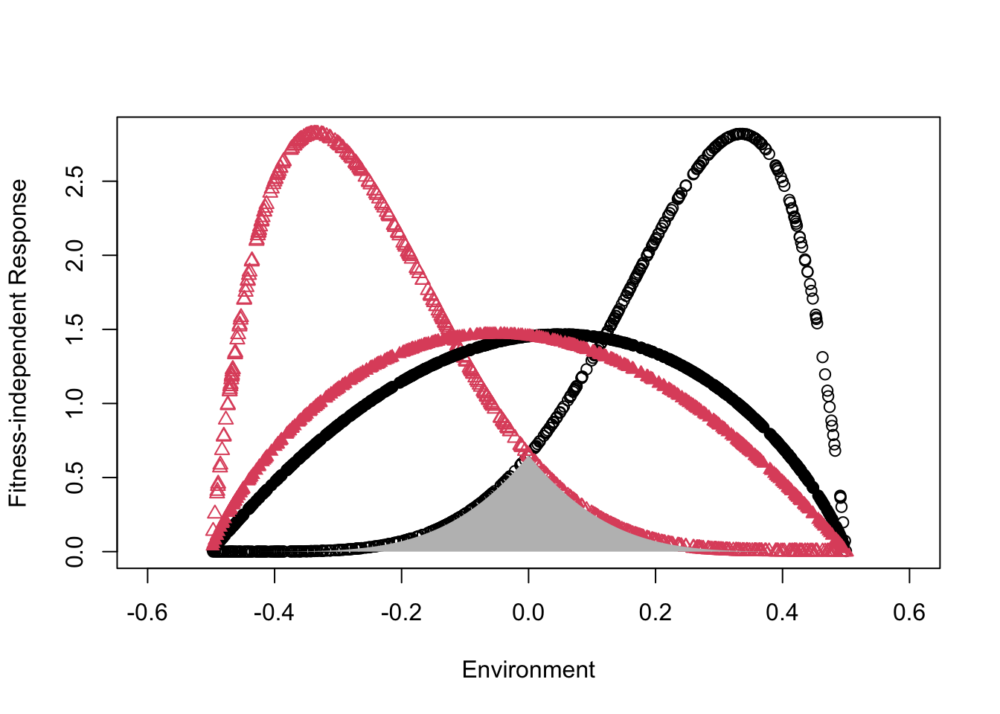
matplot(outB[['env']], outB[['Es']], pch=1:2, xlim=c(-.6,.6),
ylab="Density-independent Reproduction", xlab="Environment")
matplot(outA[['env']], outA[['Es']], pch=c(19,17), add=TRUE)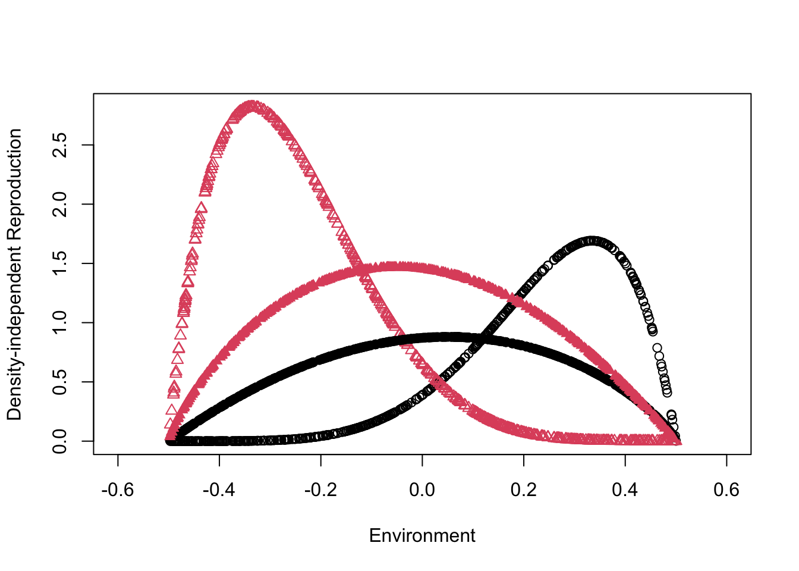
9.5 Summary
This chapter focused far more than previous chapters on the biological importance of temporal dynamics.
- In the framework of this chapter, the dynamics of succession result from the processes of mortality or disturbance, dispersal, and competitive exclusion. This framework can be applied over a broad range of spatial and temporal scales.
- Coexistence is possible via tradeoffs between competition, dispersal, and growth rate; the level of disturbance can influence the relative abundances of co-occuring species.
- The consequences of habitat destruction depend critically on the mechanisms underlying coexistence.
- The storage effect is an example of temporal niche differentiation. It depends on differential responses to the environment, buffered population growth, and covariation between competition intensity and population size.
9.6 Problems
Competition-colonization model
- Define each of the parameters, and explain what each of the them does.
Successional niche model
- Define each of the parameters, and explain what each of the them does.
- Explain which parameters you would manipulate and to what values you would set them to make it a pure competition–colonization model.
- Explain which parameters you would manipulate and to what values you would set them to make it a pure successional niche model.
- For each “pure” model, explain how transient dynamics at the local scale result in a steady state at the large scale.
- How would you evaluate the relative importance of these two mechanisms in maintaining biodiversity through successional trajectories and at equilibrium?
Storage effect
- Define each of the parameters (\(C\), \(E\)), and explain what each of the them does.
- Develop a two-species example of the storage effect, in which you manipulate both (i) fitness differences, and (ii) environmental variation. Show how these interact to determine relative abundances of the two species.